![[Previous]](https://mitsubishitechinfo.com/data/F24S/BUTTONS/fprevg.png)
![[Next]](https://mitsubishitechinfo.com/data/F24S/BUTTONS/fnextg.png)
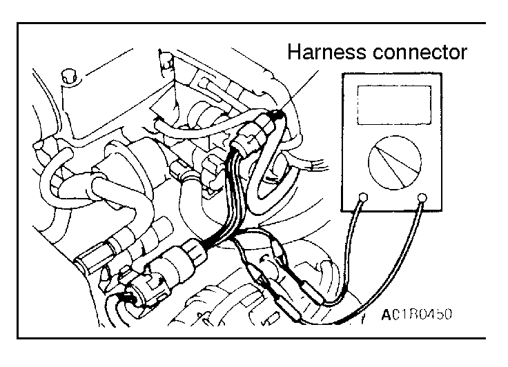 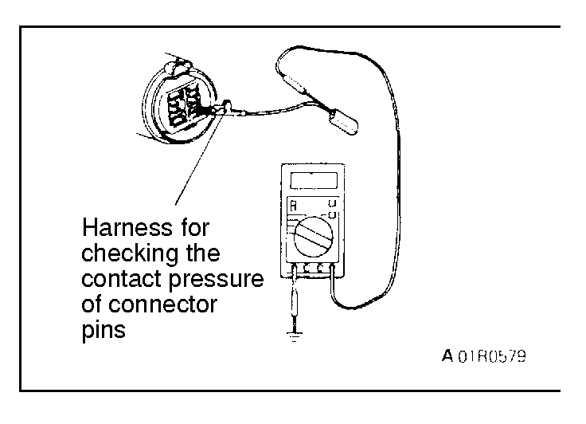 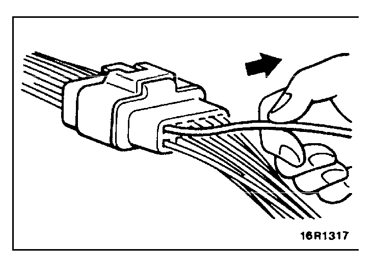 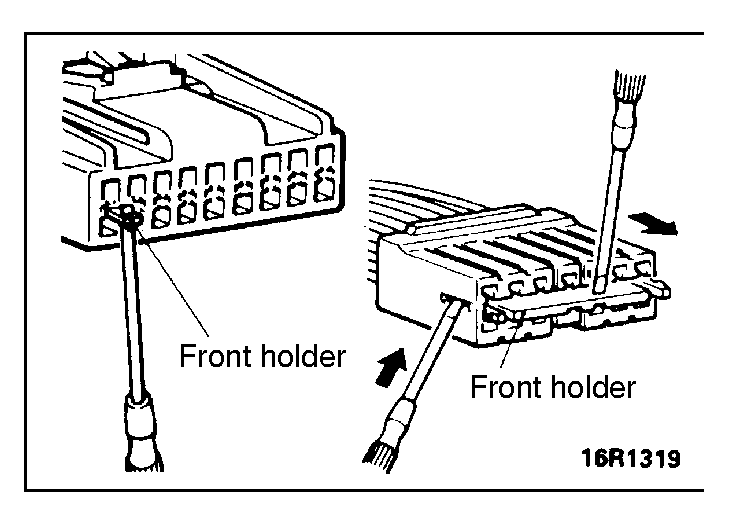 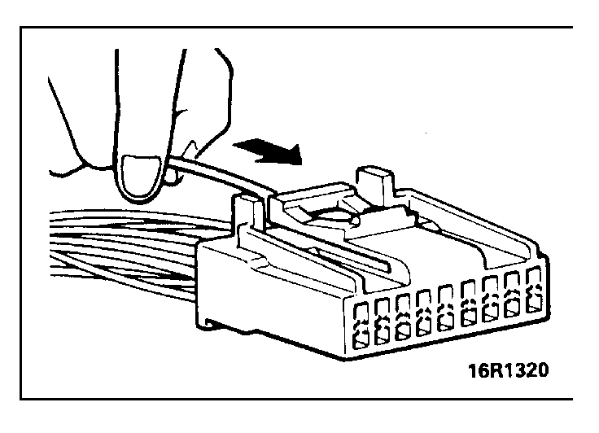 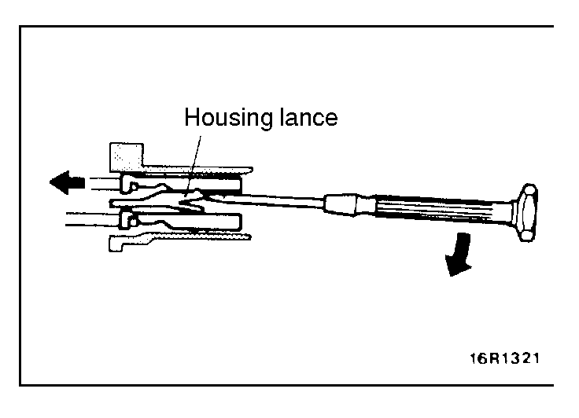 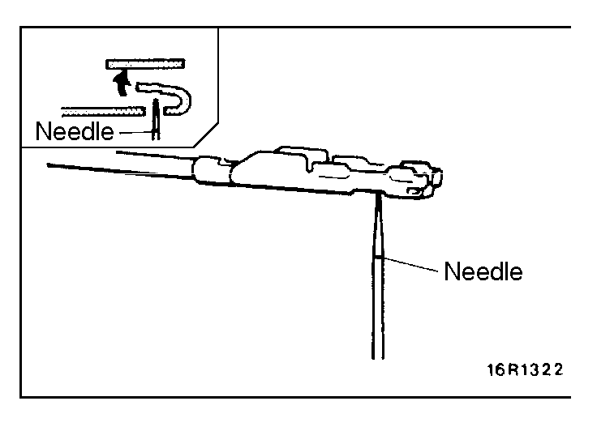 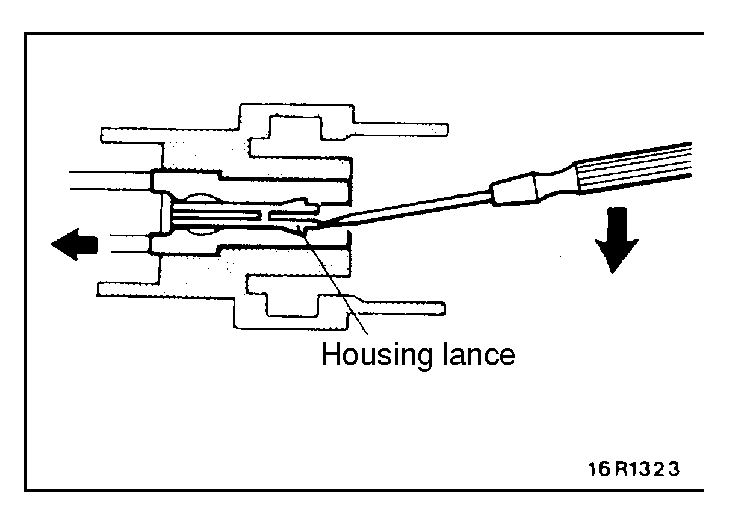 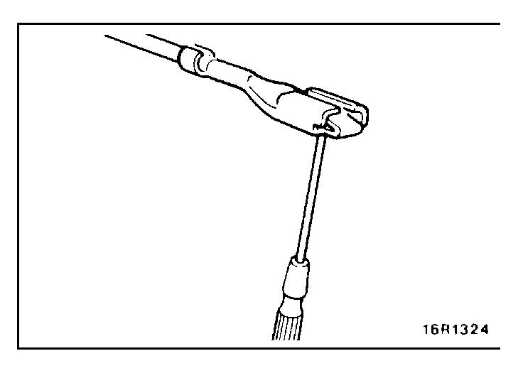 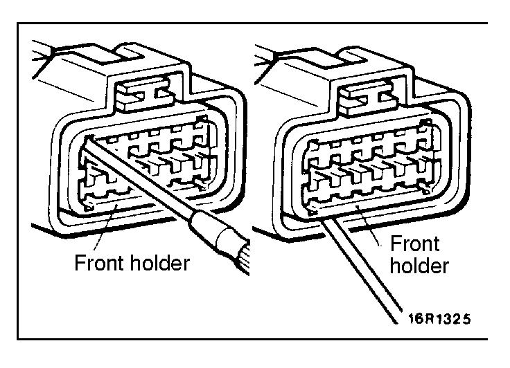 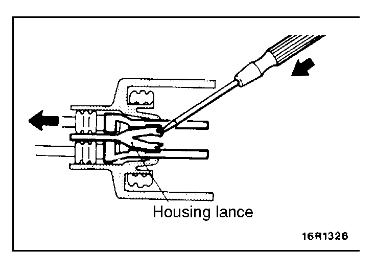 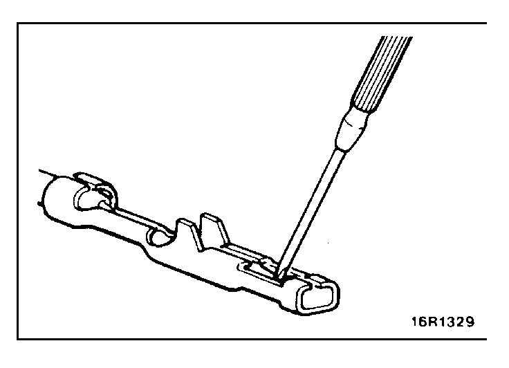 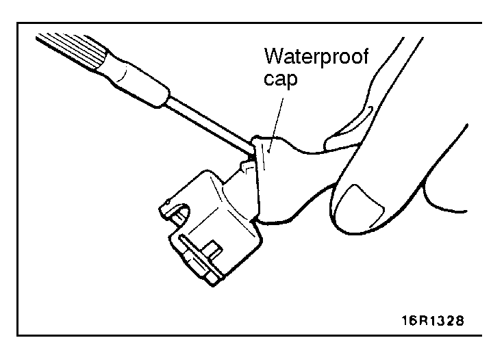 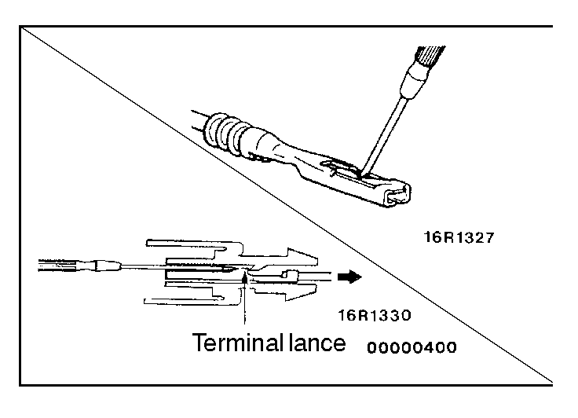
HARNESS CONNECTOR INSPECTION
CONNECTOR CONTINUITY AND VOLTAGE TEST
Follow the steps below to avoid causing poor connector contact and/or reduced waterproof performance of connectors when checking continuity and/or voltage at connectors of waterproof connectors.
(1)If checking is performed with the circuit in the state of continuity, be sure to use the special tool (harness connector). Never insert a test bar from the harness side, because to do so will reduce the waterproof performance and result in corrosion.
(2)If the connector is disconnected for checking and the facing part is the female pin side, the harness for checking the contact pressure of connector pins should be used.
Never force the insertion of a test bar, because to do so will cause poor or improper contact.
(3)If the facing part is the male pin side, contact the test bar directly to the pins. Care must be taken not to short-circuit the connector pins.
IMPROPER TERMINAL ENGAGEMENT CHECK
When the terminal stopper of the connector is out of order, engagement of the male and female terminals becomes improper even when the connector itself is engaged perfectly and terminal sometimes slips out to rear side of connector. Make sure, that each terminal does not come off the connector by pulling each harness wire.

CONNECTOR TERMINAL ENGAGEMENT AND DISENGAGEMENT
A connector that engages loosely can be repaired by removing the female terminal from the connector housing and raising its lance to establish securer engagement. Removal of the connector terminal used for MFI and ELC-4 A/T control circuit can be done in the following manner.
COMPUTER CONNECTOR
(1)Insert a screwdriver [1.4 mm (.06 in.) width] as shown in the figure, disengage front holder, and remove it.
(2)Insert the harness terminal to be repaired deep into the connector from harness side and hold it there.
(3)Insert the tip of the screwdriver [1.4 mm (.06 in.) width] into the connector as shown in the figure, raise the housing lance slightly with it, and pull out the harness.
Caution
Tool No. 753787-1 supplied by AMP can be used instead of screwdriver.
(4)Insert a needle through the hole provided on the terminal and raise the contact point of the male terminal.
ROUND WATERPROOF CONNECTOR
(1)Remove the waterproof cap by using a screwdriver.
(2)Insert the tip of the screwdriver [1.4 mm (.06 in.) or 2.0 mm (.08 in.) width] into the connector as shown in the figure, raise the housing lance slightly with it, and pull out harness.
(3)Insert a screwdriver through the hole provided on the terminal and raise the contact point of the male terminal.
RECTANGULAR WATERPROOF CONNECTOR
(1)Disengage the front holder by using a screwdriver and remove it.
(2)Insert the tip of a screwdriver [*0.8 mm (.03 in.) width] into the connector as shown in the figure, push it lightly to raise the housing lance, and pull out the harness.
*If the right size screwdriver is not available, convert a conventional driver to the proper size.
(3)Press the contact point of the male terminal down by holding a screwdriver [1.4 mm (.06 in.) width] as shown in the figure.
INJECTOR CONNECTOR
(1)Remove the waterproof cap.
(2)Insert the tip of a screwdriver [1.4 mm (.06 in.) width] into the connector as shown in the figure, press in the terminal lance, and pull out the harness.
(3)Press the contact point of the male terminal down by holding a screwdriver [1.4 mm (.06 in.) width] as shown in the figure.
Caution
Make sure the lance is in the proper condition before the terminal is inserted into the connector.